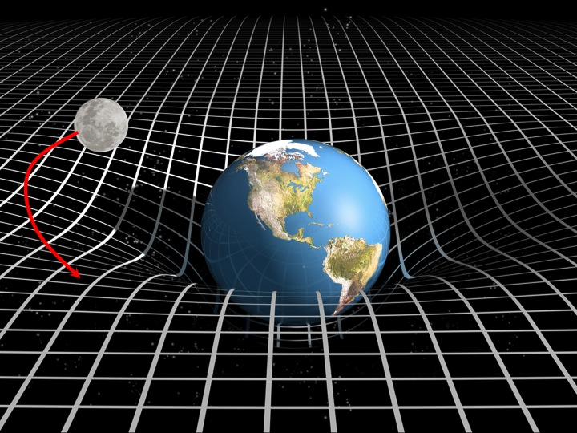
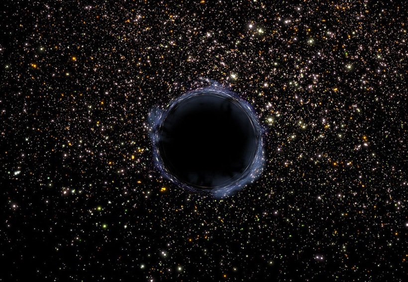

La gravitación es el acto y la consecuencia de gravitar. En el terreno de la física, la gravitación es la atracción de los cuerpos de acuerdo a su masa.Puede decirse que la gravitación o gravedad es un fenómeno de la
naturaleza mediante el cual los cuerpos con masa se atraen entre sí. Se trata de una de las interacciones fundamentales que se producen en el entorno natural. La órbita de la Tierra alrededor del sol y la órbita de la Luna
entorno a la Tierra, por ejemplo, se producen por efecto de la gravitación. Los físicos Albert Einstein e Isaac Newton propusieron las teorías más extendidas sobre la gravitación. Es importante destacar que este fenómeno
natural brinda cohesión y unidad al universo. Para comprender cómo funciona la gravitación, primero hay que saber distinguir entre la masa (la cantidad de materia que contiene un cuerpo) y el peso (una fuerza que
depende de la masa del planeta donde se mide). La interacción gravitatoria o fuerza de gravedad es la atracción que se registra en los cuerpos según su masa.Se conoce como ley de gravitación universal a la
descripción de la gravitación que formuló Newton en 1687. Esta ley de Newton establece una relación cuantitativa, que dedujo de manera empírica a través de la observación, entre la fuerza de atracción y los cuerpos con
masa que se atraen. Según Newton, dicha fuerza depende del valor de las masas de los cuerpos que se atraen y del cuadrado de la distancia que separa a ambos. Isaac Newton formuló la ley de gravitación universal en
un libro que tituló Philosophiae Naturalis Principia Mathematica.

El mayor componente del universo en el que vivimos es un enigma. Y es que los átomos que componen todo lo conocido, los planetas, las estrellas y a nosotros mismos, constituyen sólo el 5% del mismo.
El resto es lo que los científicos llaman energía oscura (la vasta mayoría) y materia oscura. Los astrónomos tienen ahora un nuevo y potente instrumento para estudiar la primera, el Instrumento Espectroscópico de la
Energía Oscura (DESI, por siglas en inglés).La evolución del universo en sus escalas más grandes está controlada por la gravedad. Actualmente, nuestra mejor descripción de la gravedad está dada por la teoría de la
relatividad general de Einstein. Aplicando las ecuaciones de Einstein al universo como un todo se encuentran soluciones de universos dinámicos, es decir, que se expanden o contraen.Desde que Edwin Hubble realizó
sus observaciones alrededor de 1930, sabemos que nuestro universo está en expansión. De acuerdo a las ecuaciones de Einstein, la materia contenida en el universo tiende a desacelerar esa expansión. Esto se debe a
que la expansión del universo, que intenta aumentar la distancia entre dos puntos cualquiera en el espacio, debe luchar contra el efecto de la atracción gravitacional de la materia que contiene, que tiende a acercarlos.A
finales del siglo XX los astrónomos intentaron medir esta tasa de desaceleración de la expansión utilizando observaciones de supernovas en galaxias distantes y el resultado fue sorprendente. La expansión del universo
no está disminuyendo su ritmo, se está acelerando.